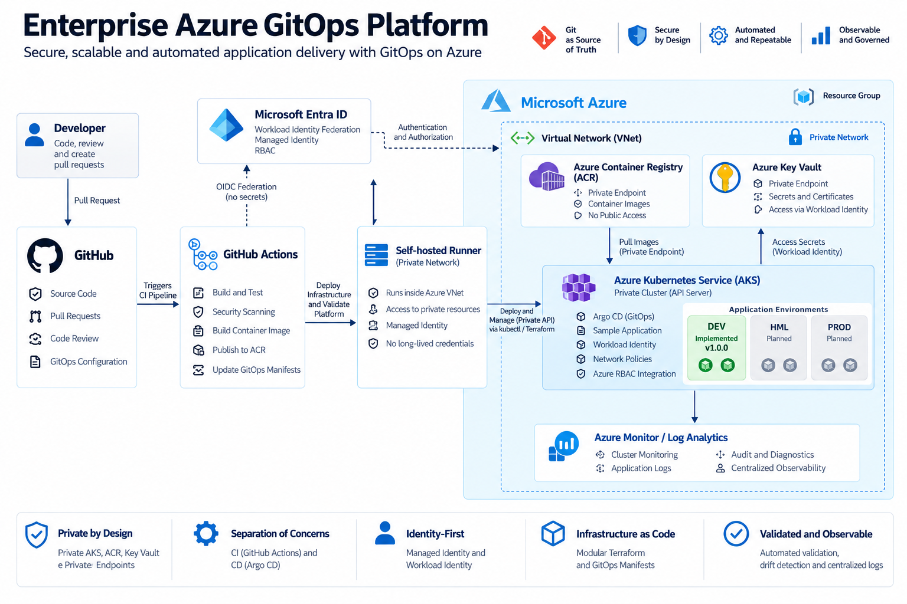

CASE STUDY • AZURE • PLATFORM ENGINEERING • GITOPS
Enterprise Azure GitOps Platform: Private AKS, Terraform e GitOps
Implementação de uma plataforma Kubernetes enterprise no Microsoft Azure combinando infraestrutura privada, Infrastructure as Code, CI/CD, identidade baseada em Azure e entrega contínua utilizando GitOps.
01
Contexto
Plataformas Kubernetes corporativas precisam ir além do simples provisionamento de um cluster. Networking privado, identidade, segurança, automação, CI/CD, observabilidade e controle de mudanças precisam funcionar como partes integradas da plataforma.
O Enterprise Azure GitOps Platform foi desenvolvido para reproduzir esse cenário utilizando práticas de Platform Engineering e uma arquitetura inspirada em ambientes enterprise no Microsoft Azure.
Construir uma plataforma Azure reproduzível e private-by-design, eliminando dependência de credenciais persistentes e separando claramente Continuous Integration de Continuous Delivery.
02
Objetivo
Demonstrar um fluxo completo entre desenvolvimento, provisionamento de infraestrutura, construção de aplicações e reconciliação GitOps em um Azure Kubernetes Service privado.
Private by Design
AKS privado, ACR e Key Vault utilizando conectividade privada e integração com Private DNS.
Infrastructure as Code
Terraform modular responsável pelo provisionamento e gerenciamento da infraestrutura Azure.
Identity First
Managed Identity, Workload Identity, Microsoft Entra ID e Azure RBAC reduzindo a utilização de credenciais persistentes.
GitOps
Git como source of truth e Argo CD responsável pela reconciliação do estado das aplicações no Kubernetes.
03
Arquitetura
A arquitetura conecta GitHub, automação de CI e recursos privados dentro do Azure. Um self-hosted GitHub Actions runner executado dentro da Virtual Network fornece o caminho de automação necessário para operar recursos que não são expostos publicamente.

A primeira versão estável implementa e valida um ambiente DEV completo. HML e PROD permanecem como evolução planejada da arquitetura e não fazem parte do escopo implementado na v1.0.0.
04
Azure Foundation
Private AKS
Kubernetes API privado, sem exposição direta do control plane para uma estação de desenvolvimento pela Internet.
Private ACR
Azure Container Registry integrado à rede por Private Endpoint para armazenamento das imagens da aplicação.
Private Key Vault
Azure Key Vault utilizando Private Endpoint e Private DNS para acesso controlado aos secrets da plataforma.
Monitoring
Log Analytics e Container Insights fornecem a base de observabilidade da infraestrutura e dos workloads.
05
Infrastructure as Code
Toda a infraestrutura Azure é gerenciada por Terraform utilizando módulos reutilizáveis para separar responsabilidades da plataforma.
Networking
Virtual Network, subnets, Private Endpoints e integração DNS.
AKS
Cluster Kubernetes privado, identidade e autorização.
Platform Services
ACR, Key Vault e componentes de observabilidade.
Identity
Managed Identity, Workload Identity e permissões Azure RBAC.
A validação final da v1.0.0 terminou com
No changes. Your infrastructure matches the configuration.,
confirmando convergência entre código Terraform, state remoto e
infraestrutura implantada.
06
CI/CD & GitOps
A plataforma separa explicitamente as responsabilidades de CI e CD. GitHub Actions executa validações, automações e processos de build, enquanto Argo CD controla a entrega das aplicações no Kubernetes.
GitHub Actions
Terraform CI, aplicação CI, validação de manifests GitOps e validação completa da plataforma.
Self-hosted Runner
Runner Linux dentro da rede Azure para acesso ao Private AKS e aos recursos privados da plataforma.
Argo CD
Responsável por observar o estado desejado no Git e reconciliar os recursos Kubernetes.
Kustomize
Estrutura declarativa para configuração do ambiente DEV e evolução futura dos demais ambientes.
07
Identity & Security
A arquitetura privilegia autenticação baseada em identidade em vez de secrets persistentes.
Microsoft Entra ID
Integração de identidade para autenticação e autorização dos componentes da plataforma.
Azure RBAC
Controle de autorização Azure e integração com o modelo de acesso ao AKS.
Managed Identity
O self-hosted runner utiliza System Assigned Managed Identity para autenticação no Azure.
Workload Identity
Aplicações Kubernetes podem acessar recursos Azure sem armazenar Azure client secrets dentro do cluster.
08
Key Engineering Decisions
GitOps Instead of Direct Deployment
CI não funciona como um segundo control plane de deployment. Argo CD mantém Git como source of truth.
Private AKS
Operações que precisam acessar o Kubernetes API são executadas dentro da rede Azure.
Managed Identity for CI
O runner utiliza identidade gerenciada em vez de credenciais Azure persistentes no workflow de infraestrutura.
Validation as a Capability
A validação da plataforma é automatizada e faz parte do próprio ciclo de engenharia.
09
Validação End-to-End
A v1.0.0 foi encerrada somente após a validação do caminho completo da plataforma.
Terraform
Formatting, validate, plan e infraestrutura convergente.
Private Connectivity
Conectividade do runner Azure com o Private AKS validada.
Authentication & RBAC
Managed Identity, autenticação AKS e autorização Azure RBAC validadas.
GitOps
Workloads Kubernetes e aplicações Argo CD validados end-to-end.
10
Resultados
Private Platform
AKS, ACR e Key Vault operando dentro de uma arquitetura orientada a conectividade privada.
Reproducible Infrastructure
Infraestrutura modular gerenciada por Terraform e remote state.
Automated Delivery
CI automatizado e Continuous Delivery baseado em Argo CD e GitOps.
Validated Platform
Fluxo privado de infraestrutura, identidade, Kubernetes e GitOps validado de ponta a ponta.
11
Tecnologias
Cloud
Microsoft Azure
Azure Kubernetes Service
Azure Container Registry
Azure Key Vault
Infrastructure
Terraform
Private Endpoints
Private DNS
Azure Networking
CI/CD & GitOps
GitHub Actions
Argo CD
Kustomize
Docker
Identity & Observability
Microsoft Entra ID
Azure RBAC
Workload Identity
Log Analytics
12
Projeto no GitHub
O código-fonte, os módulos Terraform, workflows, manifests GitOps e documentação de arquitetura estão disponíveis publicamente.
Terraform
Infraestrutura modular e configuração do ambiente DEV.
GitHub Actions
CI de infraestrutura, aplicação, GitOps e platform validation.
GitOps
Argo CD, AppProject, root application e Kustomize overlay.
Documentation
Arquitetura, Azure foundation e decisões de engenharia.
Explore a plataforma completa
Consulte o código e a documentação técnica da Enterprise Azure GitOps Platform v1.0.0 no GitHub.